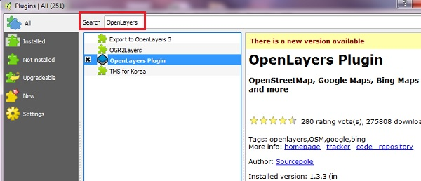
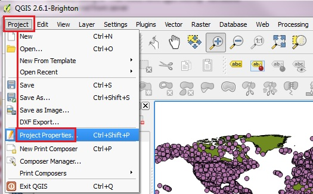
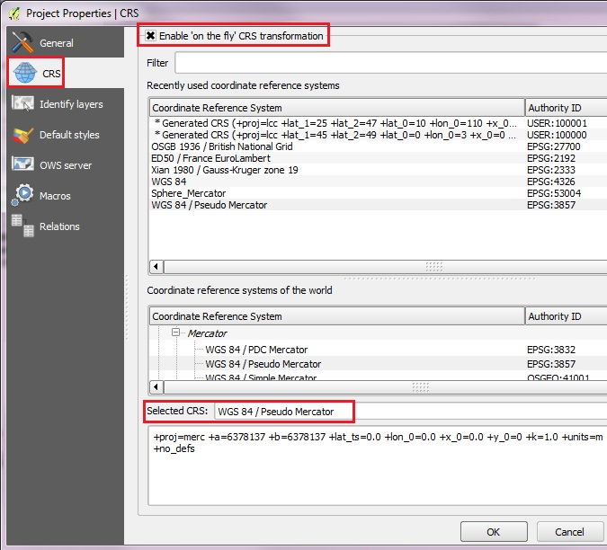
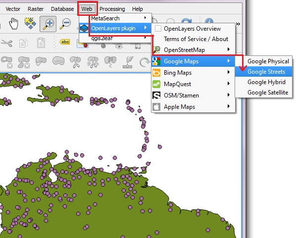
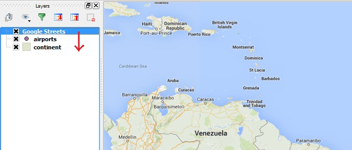
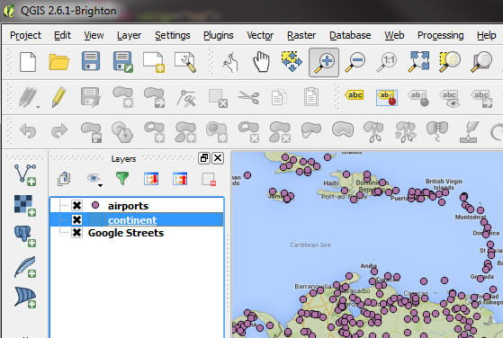

Create an X, Y points layer from CSV
1. From the main menu click Plugins -> Manage and Install Plugins
2. Start typing the name of the plugin "OpenLayers" in the SEARCH box and the list will be filtered
3. OpenLayers should already be installed, as indicated by the checkbox being ticked.
4. If you get an error using Open Layers Plugin, Uninstall, then Install a fresh version.
5. To install any plugin, click on the item in the list, then INSTALL PLUGIN button.
6. After you see "successfully installed" dialog box, CLOSE the Plugins window.

BEFORE adding your basemap, you must make sure the Projections are set properly.
From the main menu click Project > Project Properties

1. Click on CRS tab on the left to see the Coordinate Reference System settings.
2. Click the Enable ‘on the fly’ CRS transformation check box.
3. Type "Pseudo" in the Filter box. From the results select the WGS 84 / Pseudo Mercator (Authority ID EPSG:3857), then click OK to save the changes
4. Note: the previous name: Google Spherical Mercator is no longer valid.

1. Before adding the basemap, let's load two vector layers from workshop_data/part_one folder: continent.shp and airports.shp .
Zoom into some area of interest, for example the leeward islands between Venezuela and Haiti.
3. Now we are ready to add a basemap using OpenLayers plugin.
4. Back on the main menu, click Web and then navigate to OpenLayers Plugin -> Google Maps -> Google Streets
5. Or you can pick on of the other layers to add, such as OSM or Yahoo choices.
6. Click Web from the top menu and -> Open Layers plugins

By default, the basemap layer will be added on the TOP of the drawing order.
On the Layers List, click on the Google Streets layer and DRAG it to the bottom of the drawing order stack

If a polygon layer is ABOVE the Google Streets basemap in the Layer Stack, change its transparency (right click -> Properties -> Style -> Transparency)

Proceed to Add X,Y from CSV Instructions